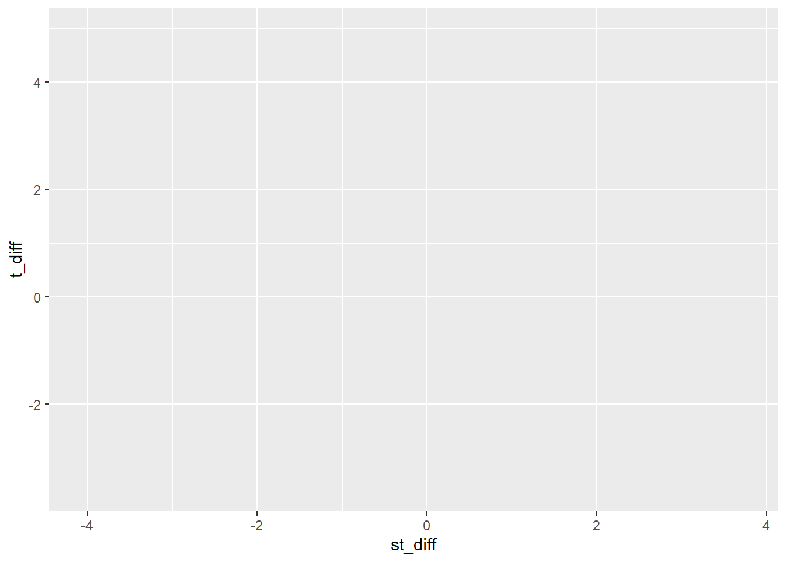
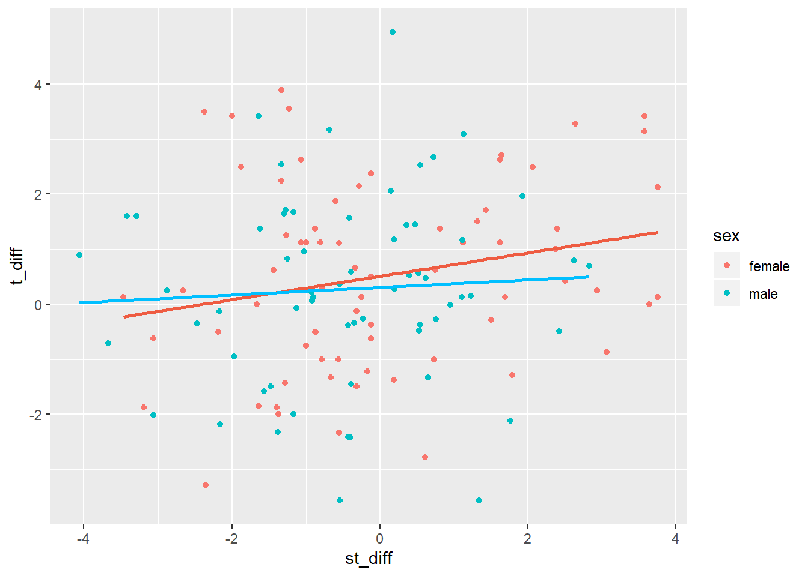

After we have our descriptives we want to look at our data to get a feel for it. This should be done before any inferential statistics.
In the first semester we used ggplot() and it’s associated functions to make a scatterplot. Lets do the same thing again, but this time using the new data set.
We need to understand a few new things about how ggplot works before we continue!
ggplot is actually a system which allows us to build a plot from the back to the front in a series of layers. I think about it as if I were drawing layers by hand on different transparent sheets of plastic and sticking them on top of each other on an old school overhead projector.
You might think that this is an unneccessarily complicated way to go about things, but it means you can make some truly wonderful data visualisations. I find it much easier to understand… now!
When I first started using ggplot I was genuinely crap at it. So crap at it, in fact, that I declared it my nemesis.
Giving you this explanation is the way in which I continue to beat it into submission!
The layer system is built from the background of the plot to the foreground. We can break down any plot into two main sections:
ggplot() function. Makes a space for a graph. Also used to declare any “global” attributes for the graph (stuff which applies to every single layer attached to this one base)geom_x() functions. These tell R how to display the data.Layers are strung together with the + symbol.
Lets do a worked example to wrap our heads around it.
ggplot(): the base layerLets make a base layer for our plot:
ggplot(dat_mutated, aes(st_diff, t_diff))
The first input is the data object we want to use to make the graph with. the second is aes(), which stands for aesthetics. Within its brackets we specify what to put on the x axis, followed by the y axis after the comma.
Since it’s declared in the base layer it is global, meaning that these will be used for all layers of this graph.
When we run the code though all we get is an empty space.
This function on it’s own doesn’t really do much for us, to provide us with a meaningful output we need to tell R what to do with the data we have given it by specifying a geom.
Now that we’ve made a space for a graph let’s fill it up with something meaningful.
Now let’s add some data points using geom_point()
ggplot(dat_mutated, aes(st_diff, t_diff)) +
geom_point()Now we have our data points on there! But it’s looking rather bland. We can set some attributes for individual layers to jazz it up a bit:
ggplot(dat_mutated, aes(st_diff, t_diff)) +
geom_point(colour = "orange")Note: this aethetic information is not declared in aes()! If we want to flat out colour all the points a single colour we declare in in the brackets for the geometric object that we are using. We can set colours within aes()… but it does something different! Have a look and compare:
ggplot(dat_mutated, aes(st_diff, t_diff)) +
geom_point(aes(colour = "orange"))It has set all the points to orange, but it’s also added a nonsense legend. What’s more useful is to use the aes() colour specification to change the colours depending on a factor:
ggplot(dat_mutated, aes(st_diff, t_diff)) +
geom_point(aes(colour = sex))When we set colour = some variable, each level of that variable will be assigned a different colour. Here all the females are red and males blue. This is good for when you want to look at details within your data set that might not be fully evident by lumping all levels of a variable together, such as examining interactions.
As a general rule, if you want to manually set a colour you do it outside of aes(), if you want R to automatically assign colours to levels of a variable you do it inside of aes().
Nobody expects you to get all of this right now, but have a look and see if you can understand this code and how it produces the results that it does. Even mess about with it… change stuff and see what happens!
ggplot(data = dat_mutated, aes(st_diff, t_diff)) + # base
geom_point(aes(colour = sex)) + # data points
geom_smooth(data = filter(dat_mutated, sex == "female"), method = "lm", se = F, colour = "tomato2") + # line of best fit for females
geom_smooth(data = filter(dat_mutated, sex == "male"), method = "lm", se = F, colour = "deepskyblue") # line of best fit for males
aes() within layersNow that we’ve covered one table verbs and plotting data, let’s look at how we deal with multiple tables that relate to each other with a very simple example.